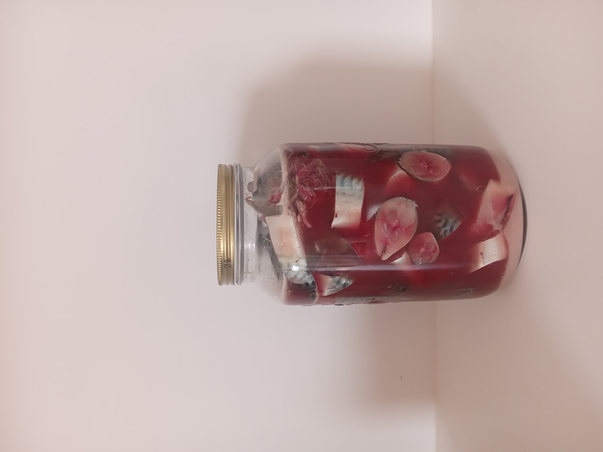
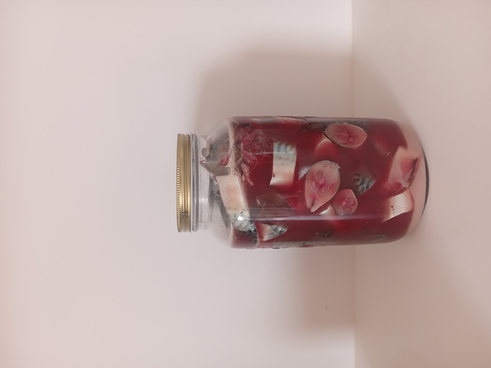

Our Mission
Stintino, a small village on the northern coast of Sardinia, was once known for its unique style of tuna fishing that involved the whole community. But like many places shaped by tradition, it has struggled under the weight of mass tourism. We were invited by Fabrizio Contini, a local activist from the NPO Absentia, to imagine how Stintino and its people might reclaim and renew their rich cultural heritage.
What we discovered was a place with a deep-rooted identity centred around food. Yet we also saw signs of decline: pasta shops permanently closed, not a single place to buy fresh fish, a lack of communal eating spaces, and no evident communal industry. Everything now depended on tourism, resulting in a particularly difficult winter period.
With food as our protagonist, we began our journey at the local library—unearthing old cookbooks that revealed a past diet shaped by wild plants and local ingenuity, such as the hyper-seasonal Casu Marzu, a cheese whose fermentation is aided by larvae. The cheese is consumed while the maggots are alive, because once they die, it’s considered spoiled.
Products like these are emblematic of the Blue Zones—places where populations have historically lived longer, healthier lives. They interest us precisely because they require collaboration with other species. Casu Marzu, for example, is banned for commercial sale by Italian authorities. A diet so popular amongst the health and wellness community, ironically cannot be commercialised exactly because it is considered dangerous to ones health. Yet for us, it’s in these products—those that rely on specific ecosystems and relationships—that we find new forms of heritage.
It is here that we imagine possible futures.
Our mission is to work closely with locals: cooking together, sharing stories, and learning hands-on techniques before they disappear. We’re building an archive of recipes and oral histories, documented not just in words but in gestures, scents, tastes, and traditions passed down through generations. Our goal is to preserve what matters most—what the community itself decides is worth saving—through collective conversation and shared meals.
The food we make is, therefore, an attempt to build thriving ecosystems where a sense of identity can flourish. Ironically, when we lose our collective identity through food—when we stop producing it in less regulated, communal ways, and industrial diets take over—people live shorter, unhealthier lives. By chance, our project offers an alternative future: one where investing in identity leads to something greater, where a healthier society becomes the natural consequence.
How We Use Food as a Tool
In Stintino we began with Mirto, a plant traditionally used to make a sweet liquor. Through experimentation we found it could do much more: flavour meats, be preserved with salt into an aromatic sauce with umami qualities like ketchup, as a complementary salty topping for sweet desserts, or reduced into a syrup to accompany chicken liver pate, replacing the usual grape must. It’s a small example of how local ingredients, when reimagined, can bridge the past and future.
Just beyond the village, we came across the haunting remains of a salt marsh. Its stone ruins—once part of a thriving salt economy—now sit vacant, while tourists kite surf in its shadow. In homage to this forgotten industry, we collected seawater from the marsh and used traditional sun-evaporation methods to produce a salt unique to Stintino. What if the salt beds were revived sustainably, with the knowledge we have today? Could they offer the community a new identity rooted in ancestral knowledge?
The Tuna Museum of Stintino is another reminder of a past not yet fully let go, perhaps because letting go would leave an uncomfortable question behind: without tuna fishing, who are we?
During a tour, we learned about garum, a fermented sauce made from tuna offal once common in Roman cuisine and still remembered in Stintino—though not fondly. Locals recalled it as a foul, rotting substance. But garum has recently returned in modern gastronomy, appreciated for its deep umami flavor. We decided to experiment ourselves, eventually producing a refined version that could complement fish crudo and enrich sauces. Ironically, we later discovered garum was also made in our own hometown of Pontevedra.
Working with locals like Giorgio, we learned simple but powerful techniques. He showed us how to peel and marinate artichoke stalks—something most people discard—in lemon, olive oil, and salt. While cooking his family’s calamari pasta recipe, Giorgio spoke about the history of Stintino, his deep connection to food, and his sadness at how quickly food knowledge and diversity are disappearing.
These stories resonate far beyond Sardinia.
Our project is designed to be adaptable, rooted in any place where traditions are at risk. We believe in sustainability, not just ecologically but culturally. We aim to cultivate ecosystems—biological and social—that support not only human life, but all life.
Through storytelling, food, and the building of living archives, we aim not just to preserve what was, but to lay the foundations for what could be. We believe the future lies in remembering, and reimagining, the past.
 
